Identidad
Visual
Un sistema gráfico cohesivo que comunica orden, precisión y modernidad sin sacrificar la calidez del hogar.
Branding · Logotipo · Sistemaes un sistema de domótica diseñado para transformar la manera en que las personas se conectan con sus hogares. Control simple, estético y centrado.
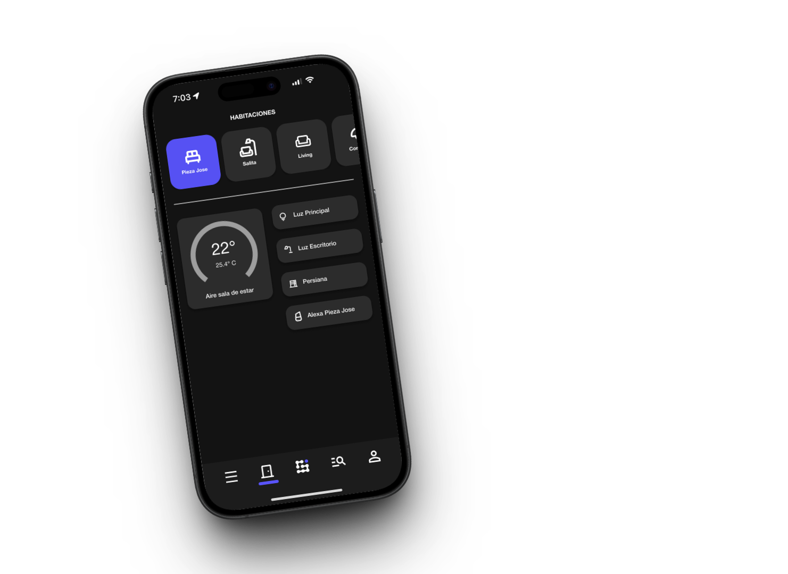
La domótica dejó de ser un lujo. Es una expectativa: que la luz, la temperatura y la seguridad respondan al ritmo de cada día sin pedir permiso.
El problema es que la mayoría de los sistemas actuales complican lo que deberían simplificar. Apps llenas de menús, instalaciones que requieren un técnico y curvas de aprendizaje que solo los más expertos toleran.
De ahí nace Mido: un sistema pensado para que cualquier persona, sin importar su edad o nivel tecnológico, pueda controlar su hogar al primer intento. Tecnología cálida, no fría.
El proyecto se desarrolló bajo el concepto de conexión, entendido tanto como vínculo emocional con el hogar como conexión tecnológica entre dispositivos.
El diseño debía ser mínimal, contemporáneo y fácilmente reconocible, reflejando orden, simplicidad y precisión.
El objetivo fue que cualquier persona, sin importar su nivel tecnológico, pudiera entender y usar Mido sin instrucciones adicionales.
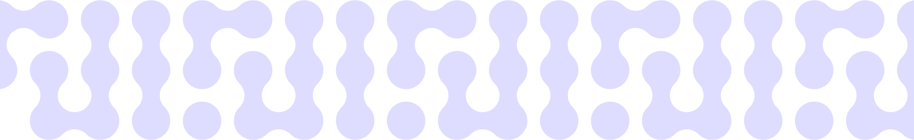
El pattern oficial de Mido es el activo gráfico más reconocible del manual: una cuadrícula de nodos por la que fluye una forma orgánica encadenada. Sintetiza la marca en una sola imagen.
Un sistema gráfico cohesivo que comunica orden, precisión y modernidad sin sacrificar la calidez del hogar.
Branding · Logotipo · SistemaSet de íconos custom que refleja la lógica de los espacios y dispositivos del hogar.
Vector · Sistema modularArquitectura visual centrada en jerarquía, velocidad de lectura y control inmediato.
UI · Composición · LayoutInteracciones accesibles, intuitivas y sin instrucciones — cualquier persona puede controlar su hogar desde el primer día.
UX · Prototyping · TestingTipografía, color e iconografía como un solo lenguaje. Cada elemento está hecho para funcionar tanto en el manual como dentro de la app.
Una selección de pantallas y bocetos del proceso de diseño. Cada vista busca simplicidad inmediata sin esconder la potencia del sistema.
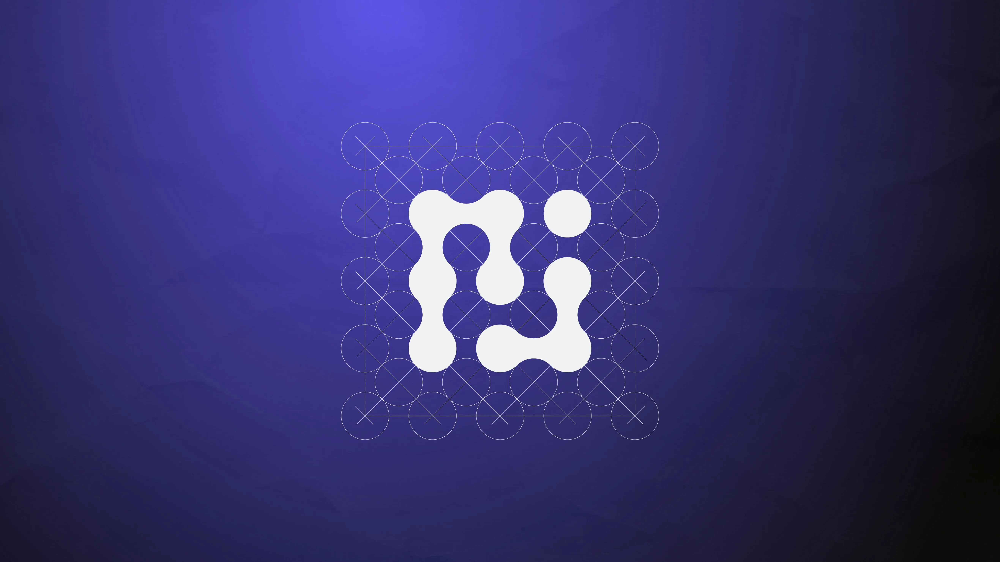
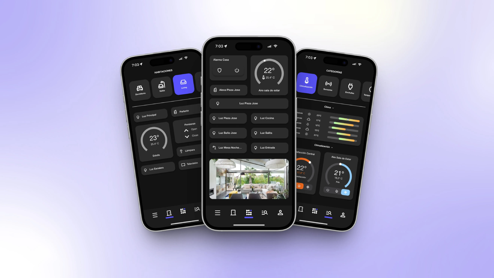
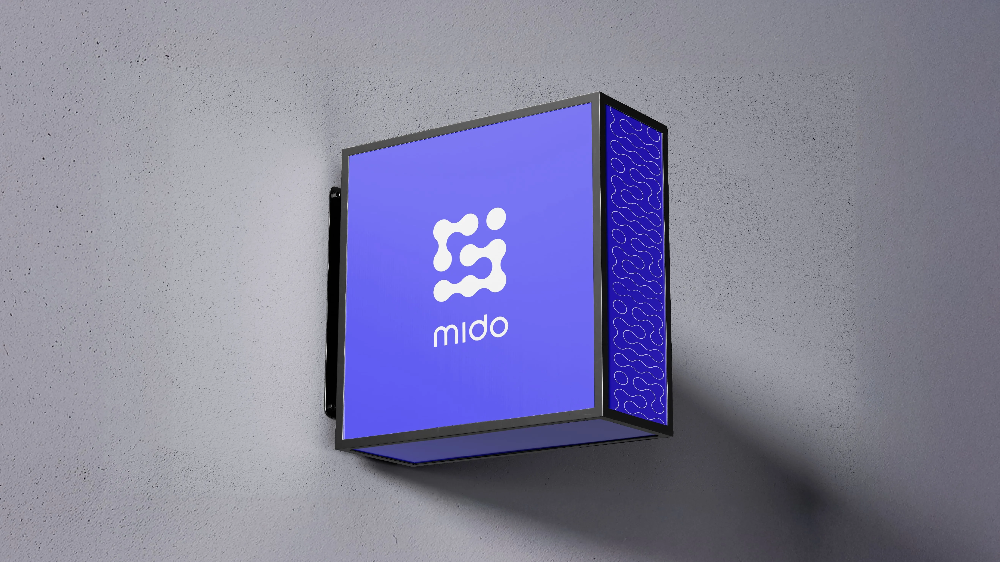
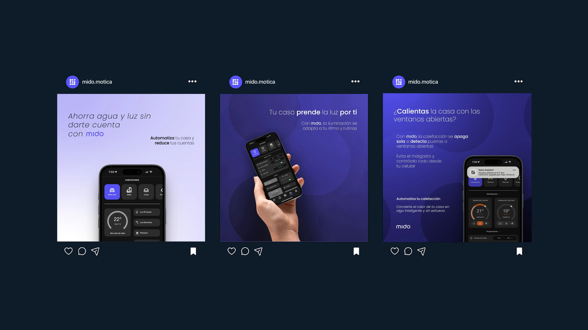
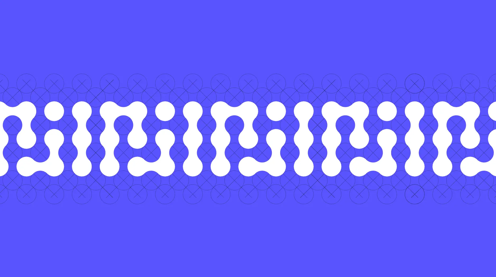
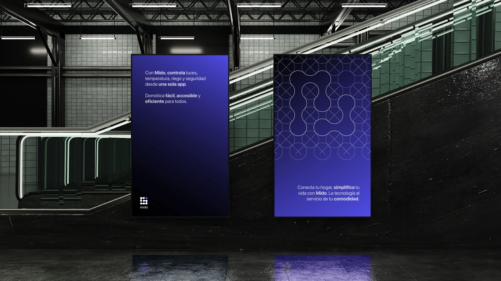
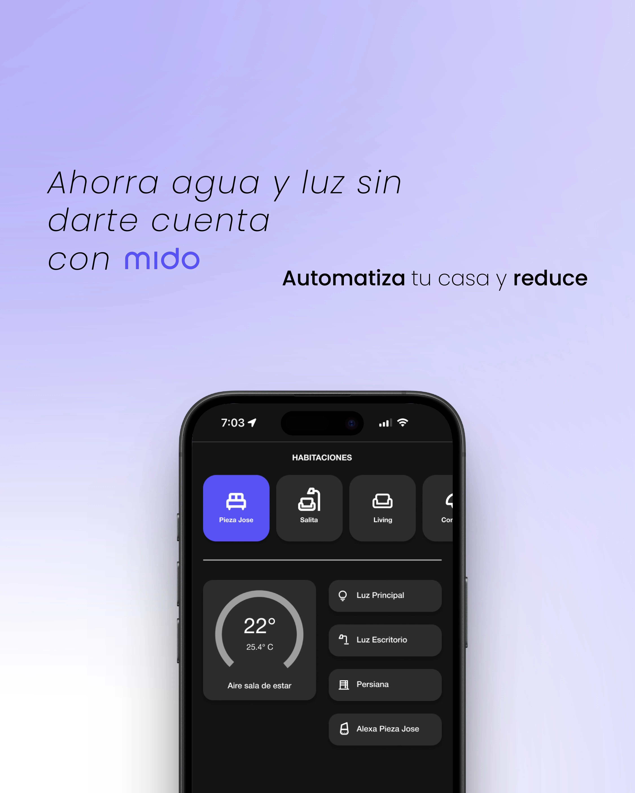
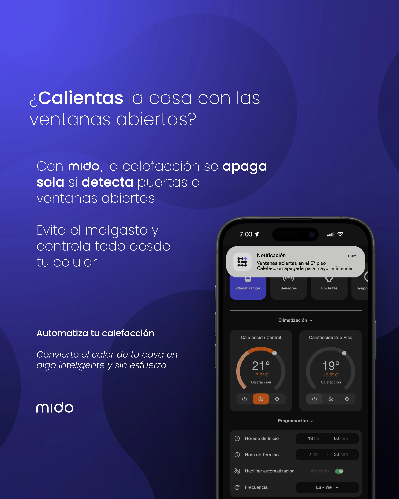
Mido orquesta los sistemas esenciales del hogar bajo una misma capa de control. Iluminación, temperatura, seguridad y energía — desde el centro hacia afuera.
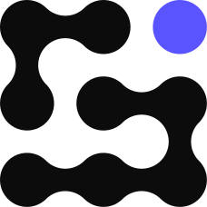
El proyecto consolida una propuesta de domótica accesible, estética y centrada en las personas.
El diseño permitió demostrar cómo la tecnología puede mejorar la vida diaria sin complejidad innecesaria, manteniendo una narrativa visual coherente, moderna y alineada con estándares actuales de interfaces inteligentes.
Selección de piezas diseñadas para las redes sociales de Mido, pensadas para presentar la marca y vender el sistema a usuarios reales. Aspect ratio 4:5, formato Instagram.